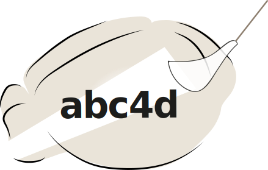
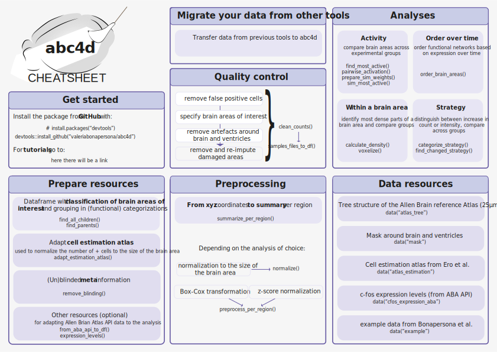

abc4d is a pipeline to preprocess and analyze whole-brain microscopy data (over time). You have identified your active cells and aligned them to an atlas and wonder “What next?”, abc4d is the place where to start.

abc4d has functions for: 1) quality control, 2) preprocessing, and 3) analyses from the macro- to micro- scale.
The resources offered within the package are in alignment of the Allen Brain Reference Atlas. However, for most functions these can be easily substituted.
Get started
You can install the released version of abc4d from github with:
#If you do not have devtools yet:
#install.packages("devtools")
devtools::install_github("valeriabonapersona/abc4d")All dependencies will be automatically downloaded.
Tutorials
See ‘Articles’.

library(abc4d)
## basic example codeMore thorough tutorials are available here. You can also see this repository for a thorough analysis example using the abc4d package.
Project organization
This package was created with devtools and it follows the recommended organization.
.
├── .gitignore
├── CITATION.md
├── LICENSE.md
├── README.md
├── DESCRIPTION
├── NAMESPACE
├── R <- Source code of all functions
├── img <- Images for readme
├── man <- Automatically generated by roxygen2
├── tests <- Automatically generated by test_that
│ └── testthat <- Tests to run on the functions
│ ├── final <- The final, canonical data sets used for analyses.
│ ├── raw <- The original data, directly downloaded from the repository.
│ └── temp <- Intermediate data.
└── renv